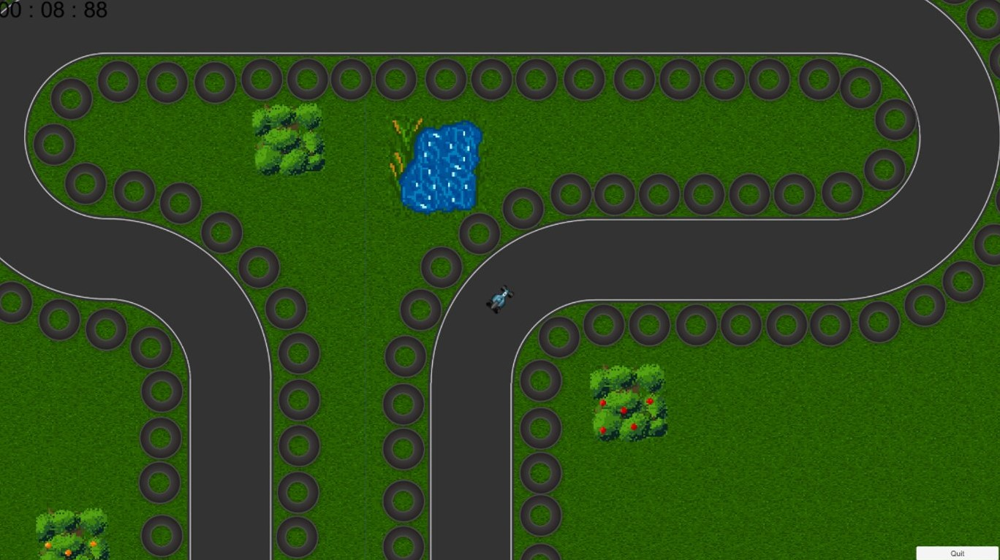

<!DOCTYPE html>
<html lang=en></html>
<head>
    <meta charset="utf-8">
    <meta name="viewport" content="width=device-width, initial-scale=1">
    <link rel="stylesheet" href="https://cdn.jsdelivr.net/npm/bootstrap@4.3.1/dist/css/bootstrap.min.css" integrity="sha384-ggOyR0iXCbMQv3Xipma34MD+dH/1fQ784/j6cY/iJTQUOhcWr7x9JvoRxT2MZw1T" crossorigin="anonymous">
    <script src="https://code.jquery.com/jquery-3.2.1.slim.min.js" integrity="sha384-KJ3o2DKtIkvYIK3UENzmM7KCkRr/rE9/Qpg6aAZGJwFDMVNA/GpGFF93hXpG5KkN" crossorigin="anonymous"></script>
    <script src="https://cdn.jsdelivr.net/npm/popper.js@1.12.9/dist/umd/popper.min.js" integrity="sha384-ApNbgh9B+Y1QKtv3Rn7W3mgPxhU9K/ScQsAP7hUibX39j7fakFPskvXusvfa0b4Q" crossorigin="anonymous"></script>
    <script src="https://cdn.jsdelivr.net/npm/bootstrap@4.0.0/dist/js/bootstrap.min.js" integrity="sha384-JZR6Spejh4U02d8jOt6vLEHfe/JQGiRRSQQxSfFWpi1MquVdAyjUar5+76PVCmYl" crossorigin="anonymous"></script>
    <link href='https://fonts.googleapis.com/css?family=Aldrich' rel='stylesheet'>
    <title>amongThem</title>
</head>

<body>
    <link rel="stylesheet" href="../HigherVoltage.css"> 
    <div id="mySidenav" class="sidenav">
        <a href="../index.html" id="about" style="font-family: 'Aldrich';">About</a>
        <a href="../projects.html" id="projects" style="font-family: 'Aldrich'; font-size: 16px;">Projects</a>
      </div>
    <div>
        
        <video src="../videos/race.mp4" type="video/mp4" controls class="center" style="height: 40%; top: 600px;"></video>
    </div>

    <div class="projdiv">

        <h2 class="projhead">
            <br>
            project: Among Them XR <br>
            language: C#<br>
        </h2>

        <p class="projtext">
            <b>
                <br>
               Galaxy War shir racing is a high paced racing game using unity.<br><br>
               For this project our group used the AGILE work flow, this ended up going great.<br>
               After weeks of working with the AGILE work flow I believe I now have a good understanding of it.<br><br>
               Furthermore I also gained a lot of experience of working with a group and overcoming struggles together.

                
                <br><br>Project experiences: <br>
Working with the agile work method<br>
Working with github
splitscreen co-op

            
            </b>
        </p>

    </div>

</body>